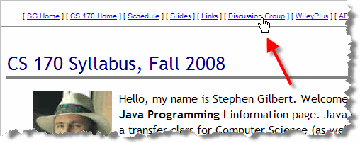
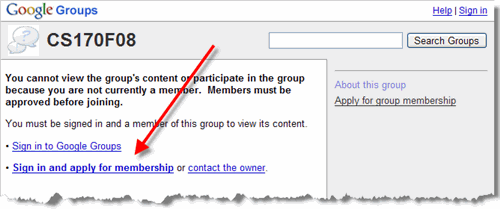
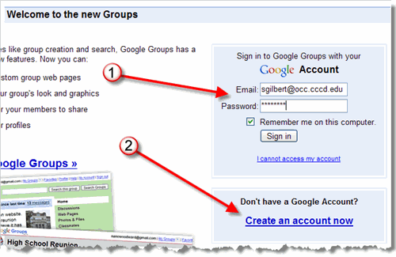
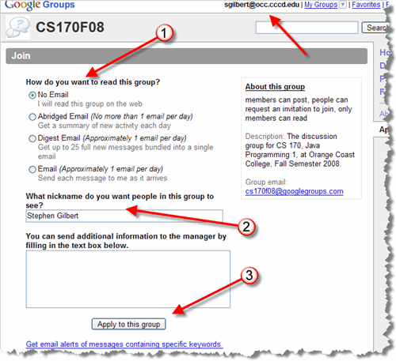
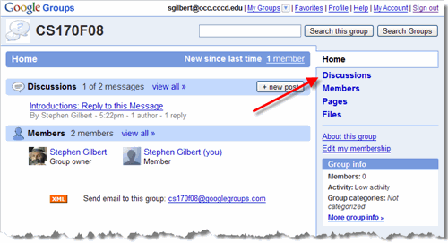
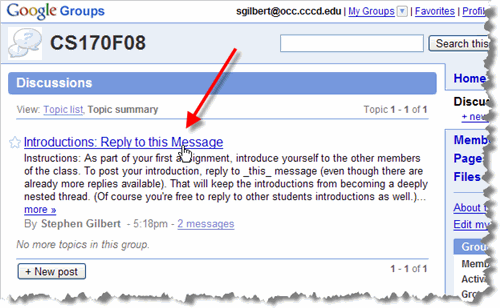
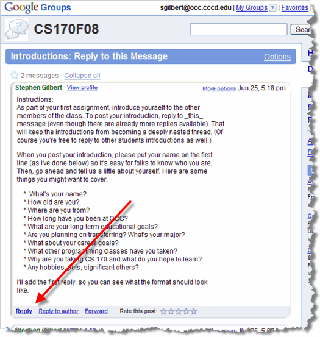

Before you start learning about Java, I"d like to give everyone in the class a chance to learn about each other. This exercise will also act as a sort of digital "sign-in" sheet. To introduce yourself to your classmates, you're going to use the CS170S09 Google Groups discussion area.
Note that the pictures shown here are for the Fall 2008 class. Except for the name of the class and the discussion group, all of the pictures should be accurate.
Getting Logged In
Here's how you get to the discussion area, and how you get logged in.
- Click the Discussion Link:
the discussion link is at
the top of the syllabus page like this:

- Sign In:
if this is your first time here, click the link that says
"Sign in and apply for membership" (where the arrow is).
If you're returning, just click the "Sign in to Google Groups"
link above it:

If you already have a Google Account linked to an email address, (which doesn't necessarily need to be a GMail account), then fill in your email address and Google password. (The arrow labeled 1). If you don't have a Google Account, just click the link labeled 2, and you can create one linked to your OCC email address.

- Sign Up:
The first time you visit the discussion group you'll need to
"join up". Here's the screen you'll see. (Note your email
address at the top of the screen.)

First, I'd suggest that you read the discussion group on the Web (1), rather than having email sent each time a post is made. Second, please set your nickname so that it is the same as the name on my roster (2). (And no, I don't see l33tfoxydude on my role sheet.) Finally, just click the Apply to this group button (3). I'll approve your membership as soon as I see it, but it may take a little time, depending on what I'm doing.
Posting Your Intro
When you first enter the CS 170 Google Discussion Group you'll
see a screen that shows the different areas
available. The screen looks like this:

On the right, you'll see the menu of different options. I'll post files for you to download in the Files section and may also use the Pages section for different handouts. For right now, click the Discussions link (see the arrow).
On the Discussions page, locate the Introductions
message shown here, and click it:

The first message (shown here) gives instructions on how to
compose your introduction. Read through the instructions, and
then click the Reply link at the bottom of the page.

Coming Up Next...
Once you've introduced yourself, spend a little time looking at the help screens, and exploring the discussion group. Remember that I'll use the discussion group to upload files for your homework assignments and to post announcements and messages about the class. You'll want to make sure you're comfortable using it.